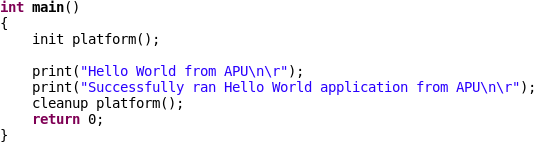
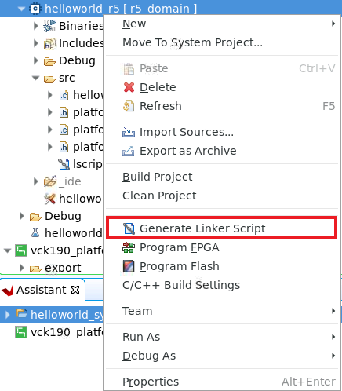

Versal ACAP CIPS and NoC (DDR) IP Core Configuration¶
The Versal™ ACAP CIPS IP core allows you to configure the processing system and the PMC block including boot mode, peripherals, clocks, interfaces, and interrupts, among other things.
This chapter describes how to perform the following tasks:
Creating a Vivado® project for the Versal ACAP to select the appropriate boot devices and peripherals by configuring the CIPS IP core.
Creating and running a Hello World software application on the On-chip-memory (OCM) of Arm® Cortex™-A72.
Creating and running a Hello World software application on the Tightly-coupled-memory (TCM) of Arm Cortex-R5F.
The NoC IP core helps configure the DDR memory and data path across the DDR memory and processing engines in the system (Scalar Engines, Adaptable Engines, and AI Engines).
Creating and running a Hello World software application on Arm Cortex-A72 using DDR as memory.
Creating and running a Hello World software application on Arm Cortex-R5F using DDR as memory.
Prerequisites¶
To create and run the Hello World applications discussed in this chapter, you will need to install the Vitis™ unified software platform. For installation procedures, see Vitis Unified Software Platform Documentation: Embedded Software Development (UG1400).
CIPS IP Core Configuration¶
Creating a Versal ACAP system design involves configuring the CIPS IP core to select the appropriate boot devices and peripherals. To start with, if the CIPS IP core peripherals and available multiplexed I/O (MIO) connections meet the requirements, no PL component is required. This chapter guides you through creating a simple CIPS IP core based design.
Creating a New Embedded Project with the Versal ACAP¶
For this example, launch the Vivado Design Suite and create a project with an embedded processor system as the top level.
Starting Your Design¶
Start the Vivado Design Suite.
In the Tcl Console, type the following command to enable ES1 boards:
enable_beta_devicePress Enter.
In the Vivado Quick Start page, click Create Project to open the New Project wizard.
Use the following information in the table to make selections in each of the wizard screens.
Table 1: System Property Settings
| Wizard Screen System | System Property | Setting or Command to Use |
|---|---|---|
| Project Name | Project Name | edt_versal |
| Project Location | C:/edt | |
| Create Project Subdirectory | Leave this checked | |
| Project Type | Specify the type of project to create. You can start with RTL or a synthesized EDIF | RTL Project |
| Do not specify sources at this time check box | Leave this unchecked | |
| Project is an extensible Vitis platform checkbox | Leave this unchecked | |
| Add Sources | Do not make any changes to this screen | |
| Add Constraints | Do not make any changes to this screen | |
| Default Part | Select | Boards |
| Display Name | Versal VMK180/VCK190 Evaluation Platform | |
| Project Summary | Project Summary | Review the project summary |
Click Finish. The New Project wizard closes and the project you just created opens in the Vivado design tool.
Note: Check the version number while choosing a board. For ES1 silicon, the board version is 1.1 and for production silicon, the board version is 2.0. Select the version based on the silicon on the board.
Creating an Embedded Processor Project¶
To create an embedded processor project:
In the Flow Navigator, under IP integrator, click Create Block Design.

The Create Block Design wizard opens.
Use the following information to make selections in the Create Block Design wizard.
Table 2: System Property Settings
| Wizard Screen | System Property | Setting or Command to Use |
|---|---|---|
| Create Block Design | Design Name | edt_versal |
| Directory | <Local to Project> |
|
| Specify Source Set | Design Sources |
Click OK.
The diagram window view opens with a message that states that this design is empty. To get started, add an IP from the IP catalog.
Click the Add IP button
 .
.In the search box, type CIPS to find the Control, Interfaces and Processing System.
Double-click the Control, Interface & Processing System IP to add it to the block design. The CIPS IP core appears in the diagram view, as shown in the following figure:

Managing the Versal ACAP CIPS IP Core in the Vivado Design Suite¶
Now that you have added the processor system for Versal™ ACAP to the design, you can begin managing the available options.
Double-click versal_cips_0 in the Block Diagram window.
In the Board Tab, choose cips fixed io as shown in the following figure.

Click OK.
By default, the CIPS does not have any control or interfaces enabled. Applying the board preset enables those peripherals on the CIPS that have board connections to their MIO pins.
Double-click versal_cips_0 in the Block Diagram window. The Re-customize IP dialog box opens, as shown in the following figure.

Expand the PS-PMC drop-down menu. Click IO Configuration as shown in the following figure. The IO Configuration dialog box opens.
I/O Configuration enables peripherals in the processing system and allows selecting pin assignments for the associated MIO. The peripherals are configured as shown in the following figure:
Note: Block Automation is not explicitly run. It is disabled when the Board interface is changed to cips fixed io from Custom.

Click OK to close the CIPS GUI.
Validating the Design and Generating the Output¶
To validate the design and to generate the output products, follow these steps:
Right-click in the white space of the Block Diagram view and select Validate Design.
Alternatively, you can press the F6 key. A message dialog box opens as shown below:

In the Block Design view, click the Sources tab.

Click Hierarchy.
Under Design Sources, right-click edt_versal and select Create HDL Wrapper.
The Create HDL Wrapper dialog box opens. Use this dialog box to create an HDL wrapper file for the processor subsystem.
TIP: The HDL wrapper is a top-level entity required by the design tools.
Select Let Vivado manage wrapper and auto-update and click OK.
In the Block Design Sources window, under Design Sources, expand edt_versal_wrapper.
Right-click the top-level block diagram, titled edt_versal_i: edt_versal (edt_versal.bd) and select Generate Output Products.
The Generate Output Products dialog box opens, as shown in the following figure.

Note: If you are running the Vivado® Design Suite on a Windows machine, you might see different options under Run Settings. In this case, continue with the default settings.
Click Generate.
This step builds all required output products for the selected source. For example, you do not need to manually create constraints for the IP processor system. The Vivado tools automatically generate the XDC file for the processor sub-system when you select Generate Output Products.
In the Block Design Sources window, click the IP Sources tab. Here you can see the output products that you just generated, as shown in the following figure.

Synthesizing, Implementing, and Generating the Device Image¶
Follow these steps to generate a device image for the design.
Go to Flow Navigator→ Program and Debug and click Generate Device Image.
A No Implementation Results Available menu appears. Click Yes.
A Launch Run menu appears. Click OK.
When the Device Image Generation completes, the Device Image Generation Completed dialog box opens.
Click Cancel to close the window.
Export hardware after you generate the Device Image.
Note: The following steps are optional and you can skip these and go to the Exporting Hardware section. These steps provide the detailed flow for generating the device image by running synthesis and implementation before generating device image. If you need to understand the flow of generating the device image, follow the steps provided below.
Go to Flow Navigator→ Synthesis, click Run Synthesis and click OK.

If Vivado prompts you to save your project before launching synthesis, click Save.
While synthesis is running, a status bar is displayed in the upper right-hand window. This status bar spools for various reasons throughout the design process. The status bar signifies that a process is working in the background. When synthesis is complete, the Synthesis Completed dialog box opens.
Select Run Implementation and click OK.
When implementation completes, the Implementation Completed dialog box opens.
Select Generate Device Image and click OK.
When Device Image Generation completes, the Device Image Generation Completed dialog box opens.
Click Cancel to close the window.
Export hardware after you generate the Device Image.
Exporting Hardware¶
From the Vivado toolbar, select File → Export→ Export Hardware.
The Export Hardware dialog box opens.
Choose Include device image and click Next.
Provide a name for your exported file (or use the default provided) and choose the location. Click Next.
A warning message appears if a Hardware Module has already been exported. Click Yes to overwrite the existing XSA file, if the overwrite message is displayed.
Click Finish.
Running a Bare-Metal Hello World Application¶
In this example, you will learn how to manage the board settings, make cable connections, connect to the board through your system, and run a Hello World software application from Arm Cortex-A72 on On-chip-memory (OCM) and Arm Cortex- R5F on Tightly-coupled-memory (TCM) on the Vitis software platform.
The following steps demonstrate the procedure to make the required cable connections, connect the board through your system, and launch the Vitis software platform.
Connect the power cable to the board.
Connect a USB Micro cable between the Windows host machine and USB JTAG connector on the target board. This cable is used for USB to serial transfer.
Note: Ensure that the SW1 switch is set to JTAG boot mode as shown in the following figure.

Power on the VMK180/VCK190 board using the power switch as shown in the following figure.

Note: If the Vitis software platform is already running, jump to step 6.
Launch the Vitis software platform by selecting Tools → Launch Vitis IDE from Vivado and set the workspace path, which in this example is
C:\edt\edt_vck190.Alternatively, you can open the Vitis software platform with a default workspace and later switch it to the correct workspace by selecting File → Switch Workspace and then selecting the workspace.
Open a serial communication utility for the COM port assigned on your system. The Vitis software platform provides a serial terminal utility, which is used throughout the tutorial; select Window → Show View → Xilinx → Vitis Serial Terminal to open it.

Click Connect to a serial port button
 in the Vitis terminal context to set the serial configuration and connect it.
in the Vitis terminal context to set the serial configuration and connect it.Verify the port details in the Windows device manager.
UART-0 terminal corresponds to Com-Port with Interface-0. For this example, UART-0 terminal is set by default, so for the Com-Port, select the port with interface-0. The following figure shows the standard configuration for the Versal ACAP processing system.

Note: You can use external terminal Serial Port Consoles like Tera Term or Putty. You can find the relevant COM port information from the Device Manager menu in Control Panel.
Creating a Hello World Application for the Arm Cortex-A72 on OCM¶
The following steps demonstrate the procedure to create a Hello World application from Arm Cortex-A72 on OCM.
Select File→ New → Application Project. Creating a New Application Project wizard opens. If this is the first time the Vitis IDE has been launched, you can select Create Application Project on the Welcome screen as shown in the following figure.
Note: Optionally, you can check the box next to “Skip welcome page next time” to skip seeing the welcome page every time.
Use the following information to make your selections in the wizard screens.
Table 3: System Property Settings
| Wizard Screen | System Properties | Setting or Command to Use |
|---|---|---|
| Platform | Create a new platform from hardware (XSA) | Click the Browse button to add your XSA file. |
| Platform Name | vck190_platform | |
| Application Project Details | Application project name | helloworld_a72 |
| Select a system project | +Create New | |
| System project name | helloworld _system | |
| Processor | psv_cortexa72_0 | |
| Domain | Select a domain | +Create New |
| Name | The default name assigned | |
| Display Name | The default name assigned | |
| Operating System | Standalone | |
| Processor | psv_cortexa72_0 | |
| Architecture | 64-bit | |
| Templates | Available Templates | Hello World |
The Vitis software platform creates the board support package for the Platform project (vck190_platform) and the system project (helloworld_system) containing an application project named helloworld_a72 under the Explorer view after performing the above steps.
Right-click vck190_platform and select Build Project. Alternatively, you can also click
 .
.Note: If you cannot see the project explorer, click the restore icon
 on the left panel and then follow step 3.
on the left panel and then follow step 3.
Modifying the helloworld_a72 Application Source Code¶
Double-click helloworld_a72, then double-click src and select helloworld.c.
This opens the
helloworld.csource file for the helloworld_a72 application.Modify the arguments in the print commands:
print("Hello World from APU\n\r"); print("Successfully ran Hello World application from APU\n\r");

Click
 to build the project.
to build the project.
Adding a New RPU Domain to the Platform Project¶
The following steps demonstrate the procedure to create a bare-metal Hello World application for the Arm Cortex-R5F on TCM. The application needs to be linked to a domain. Before creating the application project, make sure that the target domain software environment is available. If not, add the required domain to your platform using the following steps.
Double-click the
platform.sprfile in the Vitis Explorer view. (In this example, vck190_platform → platform.spr).Click the
 button in the Main view.
button in the Main view.Use the following information to make your selections in the Domain wizard screen.
Table 4: New Domain Settings
| Wizard Screen | Fields | Setting or Command to Use |
|---|---|---|
| Domain | Name | r5_domain |
| Display Name | autogenerated | |
| OS | standalone | |
| Processor | psv_cortexr5_0 | |
| Supported Runtimes | C/C++ | |
| Architecture | 32-bit |
Click OK. The newly generated r5_domain is configured.
Note: At this point, you will notice an Out-of-date decorator next to the platform in the Explorer view.
Click the
icon to build the platform. The Explorer view shows the generated image files in the platform project.
Creating the Standalone Application Project for the Arm Cortex-R5F¶
The following steps demonstrate the procedure to create a Hello World application from Arm Cortex-R5F.
Select File → New → Application Project. Creating a New Application Project wizard opens. If this is the first time the Vitis IDE has been launched, you can select Create Application Project on the Welcome screen.
Note: Optionally, you can check the box next to “Skip welcome page next time” to skip seeing the welcome page every time.
Use the following information to make your selections in the wizard screens.
Table 5: System Property Settings
| Wizard Screen | System Properties | Setting or Command to Use |
|---|---|---|
| Platform | Select a platform from repository | Select vck190_platform |
| Application Project Details | Application project name | helloworld_r5 |
| Select a system project | helloworld_system | |
| System project name | helloworld _system | |
| Target processor | psv_cortexr5_0 | |
| Domain | Select a domain | r5_domain |
| Name | r5_domain | |
| Display Name | r5_domain | |
| Operating System | standalone | |
| Processor | psv_cortexr5_0 | |
| Templates | Available Templates | Hello World |
>***Note*:** The standalone application helloworld_r5 is generated within the existing system project helloworld_system.
Right-click vck190_platform and select Build Project. Alternatively, you can also click
to build the project.
Modifying the helloworld_r5 Application Source Code¶
Expand helloworld_r5 and double-click src and select helloworld.c to open the
helloworld.csource file for the helloworld_r5 application.Modify the arguments in the print commands:
print("Hello World from RPU\n\r"); print("Successfully ran Hello World application from RPU\n\r");

Click
to build the project.
Modifying the Application Linker Script for the Application Project helloworld_r5¶
The following steps demonstrate the procedure to modify the application linker script for the application project helloworld_r5.
Note: The Vitis software platform provides a linker script generator to simplify the task of creating a linker script for GCC. The linker script generator GUI examines the target hardware platform and determines the available memory sections. The only action required by you is to assign the different code and data sections in the ELF file to different memory regions.
Select the application project (helloworld_r5) in the Vitis Explorer view.
Note: The linker will use the DDR memory if it exists on the platform, otherwise it will default to the on-chip memory (OCM).
In the
srcdirectory, delete the defaultlscript.ldfile.Right-click helloworld_r5 and click Generate Linker Script. Alternatively, you can select Xilinx → Generate Linker Script.

Note: In the Generate linker script dialog box, the left side is read-only, except for the Output Script name and project build settings in the Modify project build settings as follows field. On the right side, you have two choices of how to allocate memory: The Basic tab or the Advanced tab. Both perform the same tasks; however, the Basic tab is less granular and treats all types of data as “data” and all types of instructions as “code.” This is often sufficient to accomplish most tasks. Use the Advanced tab for precise allocation of software blocks into various types of memory.
Under the Basic tab, select psv_r5_0_atcm_MEM_0 in the drop-down menu for all the three sections and then click Generate.

Note: A new linker script (
lscript.ld) will be generated in the src folder within the application project.Right-click helloworld _system and select Build Project or click
. This generates the project elf files within the Debug folder of the helloworld_r5 project.
Running Applications in the JTAG Mode using the System Debugger in the Vitis Software Platform¶
To run an application, you must create a ‘Run configuration’ that captures the settings for executing the application. You can either create a Run configuration for the whole system project or independent applications.
Creating a Run Configuration for the System Project¶
Right-click on the system project helloworld_system and select Run As → Run Configurations. The Run configuration dialog box opens.
Double-click System Project Debug to create a Run Configuration.
The Vitis software platform creates a new run configuration with the name: SystemDebugger_helloworld_system. For the remaining options, refer the following table.
Table 6: Create, Manage, and Run Configurations Settings
| Wizard Tab | System Properties | Setting or Command to Use |
|---|---|---|
| Main | Project | helloworld_system |
| Target → Hardware Server | Attach to the running target (local). If not already added, add using the New button. |
Click Run.
Note: If there is an existing launch configuration, a dialog box appears asking whether you want to terminate the process. Click Yes. The following logs are displayed on the terminal.

Creating a Run Configuration for a Single Application within a System Project¶
You can create a run configuration for a single application within a system project in two ways:
Method I¶
Right-click on the system project helloworld_system and select Run As → Run Configurations. The Run configuration dialog box opens.
Double-click System Project Debug to create a run configuration.
The Vitis software platform creates a new run configuration with the name: SystemDebugger_helloworld_system_1. Rename this to SystemDebugger_helloworld_system_A72. For the remaining options, refer to the following table.
Table 7: Create, Manage, and Run Configurations Settings
| Wizard Tab | System Properties | Setting or Command to Use |
|---|---|---|
| Main | Project | helloworld_system |
| Debug only selected applications | Check this box | |
| Selected Applications | Click the Edit button and check helloworld_a72 | |
| Target → Hardware Server | Attach to the running target local). If not already added, add using the New button. |
Click Apply.
Click Run.
Note: If there is an existing run configuration, a dialog box appears asking whether you want to terminate the process. Click Yes. The following logs are displayed on the terminal.

Note: Both the APU and RPU applications print on the same console as both applications are using UART0 for these applications. The application software sends the hello world strings for both APU and RPU to the UART0 peripheral of the PS section. From UART0, the hello world strings goes byte-by-byte to the serial terminal application running on the host machine, which displays it as a string.
Method II¶
Right-click on the application project hello_world_r5 and select Run As → Run Configurations. The Run configuration dialog box opens.
Double-click Single Project Debug to create a run configuration.
The Vitis software platform creates a new run configuration with the name: Debugger_helloworld_r5-Default. For the remaining options, refer to the following table.
Table 8: Create, Manage, and Run Configurations Settings
| Wizard Tab | System Properties | Setting orCommand to Use |
|---|---|---|
| Main | Debug Type | Standalone Application Debug |
| Connection | Connect to the board. If connected already, select the connection here. | |
| Project | helloworld_r5 | |
| Configuration | Debug |
Click Apply.
Click Run.
Note: If there is an existing run configuration, a dialog box appears asking whether you want to terminate the process. Click Yes. The following logs are displayed on the terminal.

NoC (and DDR) IP Core Configuration¶
This section describes the NoC (and DDR) configuration and related connections required for use with the CIPS configured earlier in this chapter. The Versal ACAP CIPS IP core allows you to configure two superscalar, multi-core Arm Cortex-A72 based APUs, two Arm Cortex-R5F RPUs, a platform management controller (PMC), and a CCIX PCIe® module (CPM). The NoC IP core allows configuring the NoC and enabling the DDR memory controllers.
Configuring the NoC IP Core in an Existing Project¶
For this example, launch the Vivado Design Suite and project with basic CIPS configuration done as shown in Example Project: Creating a New Embedded Project with the Versal ACAP.
Configuring Your Design¶
To configure your design, follow these steps:
Open the design created in Example Project: Creating a New Embedded Project with the Versal ACAP,
edt_versal.xpr.Open the block design
edt_versal.bd.Go to the Tcl Console in the Vivado Design Suite and type the following command:
apply_bd_automation -rule xilinx.com:bd_rule:versal_cips -config { apply_board_preset {0} configure_noc {Add new AXI NoC} num_ddr {1} pcie0_lane_width {None} pcie0_mode {None} pcie0_port_type {Endpoint Device} pcie1_lane_width {None} pcie1_mode {None} pcie1_port_type {Endpoint Device} pl_clocks {None} pl_resets {None}} [get_bd_cells versal_cips_0]
Hit Enter.
Open the AXI NoC IP.
In the Boards tab, configure the setting as shown in the following figure and click OK.

Click sys_clk_0_0 pin in the design.
In the External Interface Properties window, select Properties→ CONFIG→ FREQ_HZ and change the frequency to 200 MHz.

This adds the AXI NoC IP for DDR access.

Validating the Design and Generating the Output¶
To validate the design and generate the output, follow these steps:
Right-click in the white space of the Diagram window and select Validate Design. Alternatively, you can press the F6 key. A dialog box with the following message opens:
Click OK to close the message.
In the Block Design Sources window, under Design Sources, expand edt_versal_wrapper.
Right-click the top-level block diagram, titled edt_versal_i: edt_versal (
edt_versal.bd) and select Generate Output Products.The Generate Output Products dialog box opens, as shown in the following figure.
Note: If you are running the Vivado Design Suite on a Windows machine, you might see different options under Run Settings. In this case, continue with the default settings.
Click Generate.
This step builds all required output products for the selected source. For example, you do not need to manually create constraints for the IP processor system. The Vivado tools automatically generate the XDC file for the processor sub-system when you select Generate Output Products.
When the Generate Output Products process completes, click OK. Click the Design Runs window on the bottom window to see OOC Module Runs/Synthesis/Implementation runs.
In the Sources window, click the IP Sources view. Here you can see the output products that you just generated, as shown in the following figure.

Synthesizing, Implementing, and Generating the Device Image¶
Follow these steps to generate a device image for the design.
Go to Flow Navigator→ Program and Debug and click Generate Device Image.
A No Implementation Results Available menu appears. Click Yes.
A Launch Run menu appears. Click OK.
When the Device Image Generation completes, the Device Image Generation Completed dialog box opens.
Click Cancel to close the window.
Export hardware after you generate the Device Image and click OK.
Note: The following steps are optional and you can skip these and go to the Exporting Hardware section. These steps provide the detailed flow for generating the device image by running synthesis and implementation before generating device image. If you need to understand the flow of generating the device image, follow the steps provided below.
Go to Flow Navigator→ Synthesis and click Run Synthesis.
If Vivado prompts you to save your project before launching synthesis, click Save.
While synthesis is running, a status bar is displayed in the upper right-hand window. This status bar spools for various reasons throughout the design process. The status bar signifies that a process is working in the background. When synthesis is complete, the Synthesis Completed dialog box opens.
Select Run Implementation and click OK.
When implementation completes, the Implementation Completed dialog box opens.
Select Generate Device Image and click OK.
When Device Image Generation completes, the Device Image Generation Completed dialog box opens.
Click Cancel to close the window.
Export hardware, after you generate Device Image.
Exporting Hardware¶
From the Vivado main menu, select File→ Export → Export Hardware. The Export Hardware dialog box opens.
Choose Include bitstream and click Next.
Provide a name for your exported file (or use the default provided) and choose the location. Click Next.
A warning message appears if a hardware module has already been exported. Click Yes to overwrite the existing XSA file, if the overwrite message is displayed.
Click Finish.
Running a Bare-Metal Hello World Application on DDR Memory¶
In this example, you will learn how to manage the board settings, make cable connections, connect to the board through your PC, and run a Hello World software application from Arm Cortex-A72 and Arm Cortex-R5F on DDR memory in the Xilinx Vitis software platform.
You will create a new Vitis project, similar to the one in Running a Bare-Metal Hello World Application, except that it will use the default linker scripts, which will reference the DDR memory.
Manage board settings, make cable connections, and connect to the board through your system and launch the Vitis software platform as discussed in steps 1 through 7 in Running a Bare-Metal Hello World Application.
Note: A new Vitis workspace needs to be created for this. Do not use the workspace created in Running a Bare-Metal Hello World Application.
Create a bare-metal Hello World system project with application running on Arm Cortex-A72 and modify its source code as discussed in steps 1 through 3 of Creating a Hello World Application for the Arm Cortex-A72 on OCM and steps 1 through 3 of Modifying the helloworld_a72 Application Source Code.
Right-click helloworld _system and select Build Project or click
to generate the project elf files within the Debug folder of the application project.Create an additional RPU domain for your platform (created in Step 2) as discussed in Adding a New RPU Domain to the Platform Project.
Create a bare-metal Hello World application running on Arm Cortex-R5F within the existing system project (built in Step 2) and modify its source code as discussed in steps 1 through 3 of Creating the Standalone Application Project for the Arm Cortex-R5F and steps 1 through 3 of Modifying the helloworld_r5 Application Source Code.
Right-click helloworld _system and select Build Project or click
to generate the project elf files within the Debug folder of the application project.
Refer to Running Applications in the JTAG Mode using the System Debugger in the Vitis Software Platform for running the applications built above in JTAG mode using system debugger in the Vitis software platform and to Generating Boot Image for Standalone Application for generating boot images for standalone applications.
© Copyright 2020-2021 Xilinx, Inc.
Licensed under the Apache License, Version 2.0 (the “License”); you may not use this file except in compliance with the License. You may obtain a copy of the License at http://www.apache.org/licenses/LICENSE-2.0.
Unless required by applicable law or agreed to in writing, software distributed under the License is distributed on an “AS IS” BASIS, WITHOUT WARRANTIES OR CONDITIONS OF ANY KIND, either express or implied. See the License for the specific language governing permissions and limitations under the License.